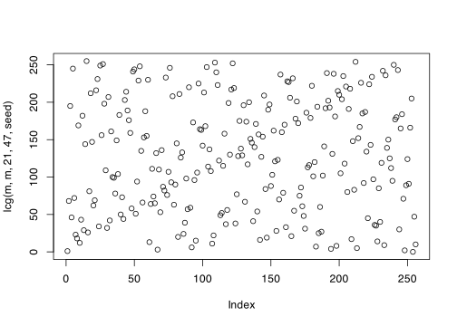

n <- 1e6
samples <- runif(n, -1, 2)
mean(samples^4)[1] 2.200859\[\newcommand{\Exg}{\operatorname{\mathbb{E}}} \newcommand{\Ex}{\mathbb{E}} \newcommand{\Ind}{\mathbb{I}} \newcommand{\Var}{\operatorname{Var}} \newcommand{\Cov}{\operatorname{Cov}} \newcommand{\Corr}{\operatorname{Corr}} \newcommand{\ee}{\mathrm{e}}\]
1. Let \(X\) be uniform on \([-1,2]\).
(a) By hand, calculate the exact value of \(\Ex X^4\).
Solution.
\[\int_{-1}^2 x^4\,\frac{1}{2-(-1)}\,\mathrm{d}x = \tfrac13 \Big[\tfrac15x^5\Big]_{-1}^2 = \tfrac13\Big(\tfrac{32}{5}-\big(-\tfrac15\big)\Big) = \tfrac{33}{15} = \tfrac{11}{5} = 2.2\]
(b) Using R, calculate a Monte Carlo estimate for \(\Ex X^4\).
Solution. I used the R code
n <- 1e6
samples <- runif(n, -1, 2)
mean(samples^4)[1] 2.2008592. Let \(X\) and \(Y\) both be standard normal distributions. Compute a Monte Carlo estimate of \(\Exg \max\{X,Y\}\). (You may wish to investigate R’s pmax() function.)
Solution. By looking at ?pmax (or maybe searching on Google) I discovered that pmax() gives the “parallel maxima” of two (or more vectors). That is the first element is the maximum of all the first elements of the vectors; the second element is the maximum of all the second elements of the vectors; and so on.
So I used the R code
n <- 1e6
xsamples <- rnorm(n)
ysamples <- rnorm(n)
mean(pmax(xsamples, ysamples))[1] 0.56373393. You are trapped alone on an island. All you have with you is a tin can (radius \(r\)) and a cardboard box (side lengths \(2r \times 2r\)) that it fits snugly inside. You put the can inside the box [left picture].
When it starts raining, each raindrop that falls in the cardboard box might fall into the tin can [middle picture], or might fall into the corners of the box outside the can [right picture].

(a) Using R, simulate rainfall into the box. You may take units such that \(r = 1\). Estimate the probability \(\theta\) that a uniformly-random raindrop that falls in the cardboard box falls into the tin can also.
Solution. I set things up so that the box is \([-1, 1]^2\), centered at the origin. This means that the inside of the can is the set of points is those \((x,y)\) such that \(x^2 + y^2 \leq 1\).
n <- 1e6
rain_x <- runif(n, -1, 1)
rain_y <- runif(n, -1, 1)
in_box <- function(x, y) x^2 + y^2 <= 1
mean(in_box(rain_x, rain_y))[1] 0.785823(b) Calculate exactly the probability \(\theta\).
Solution. The area of the box is \(2r \times 2r = 4r^2\). The area of the can is \(\pi r^2\). So the probability a raindrop landing in the box lands in the can is \[ \frac{\text{area of can}}{\text{area of box}} = \frac{\pi r^2}{4r^2} = \frac{\pi}{4} \approx 0.785. \]
(c) You realise that, despite being trapped all alone on the island, you now have a way of approximating the value of \(\pi\). If you want to calculate \(\pi\) to 6 decimal places, roughly how many raindrops do you need to fall into the box?
Solution. The phrase “to 6 decimal places” isn’t a precise mathematical one. I’m going to interpret this as getting the root-mean-square error below \(10^{-6}\). If you interpret it slightly differently that’s fine – for example, getting the width of a 95% confidence interval below \(10^{-6}\) could be another, slightly stricter, criterion.
One could work this out by hand. Since the variance of a Bernoulli random variable is \(p(1-p)\), the mean-square error of our estimator is \[ \frac{\frac{\pi}{4}(1 - \frac{\pi}{4})}{n} \approx \frac{0.169}{n} . \] So we need \[n = \frac{0.169}{(10^{-6})^2} \approx 169 \text{ billion} . \]
That said, if we are trapped on our desert island, maybe we don’t know what \(\frac{\pi}{4}(1 - \frac{\pi}{4})\) is. In that case we could do this using the can and the box. Our estimate of the variance is
var_est <- var(in_box(rain_x, rain_y))
var_est / (1e-6)^2[1] 168305380974We will probably spend a long time waiting for that much rain!
4. Let \(h(x) = 1/(x + 0.1)\). We wish to estimate \(\int_0^5 h(x) \, \mathrm{d}x\) using a Monte Carlo method.
(a) Estimate the integral using \(X\) uniform on \([0,5]\).
Solution.
n <- 1e6
integrand <- function(x) 1 / (x + 0.1)
samples1 <- runif(n, 0, 5)
mean(5 * integrand(samples1))[1] 3.929335(In fact, the true answer is \(\log(5.1) - \log(0.1) = 3.932\), so it looks like this is working correctly.)
(b) Can you come up with a choice of \(X\) that improves on the estimate from (a)?
Solution. Let’s look at a graph of the integrand \(h\).
curve(
integrand, n = 1001, from = 0, to = 5,
col = "blue", lwd = 3,
xlab = "x", ylab = "integrand h(x)", xlim = c(0,5)
)
abline(h = 0)
We see that we get a much bigger contribution to the integral from values near 0. So a random variable that picks values nearer to 0 more often might have a chance of giving a more accurate result.
I decided to try an exponential distribution with rate 1, which should sample the smaller values of \(x\) more often.
pdf <- function(x) dexp(x, 1)
phi <- function(x) (integrand(x) / pdf(x)) * (x <= 5)
samples2 <- rexp(n, 1)
mean(phi(samples2))[1] 3.935744(I had to include x <= 5 in the expression for \(\phi\), because my exponential distribution will sometimes take samples above 5, but they should count as 0 in an estimate for the integral between 0 and 5.)
To see whether or not this was an improvement, I estimated the mean-square error.
var(5 * integrand(samples1)) / n[1] 3.361979e-05var(phi(samples2)) / n[1] 6.073885e-06I found that I had reduced the mean-square error by roughly a factor of 5.
5. When calculating a Monte Carlo estimate \(\frac{1}{n} \sum_{i=1}^n \phi(x_i)\), one might wish to first generate the \(n\) samples \((x_1, x_2, \dots, x_n)\) and store them, and only then, after all samples are generated, finally calculate the estimate. However, when \(n\) is extremely large, storing all \(n\) samples uses up a lot of space in a computer’s memory. Describe (in words, in R code, or in a mixture of the two) how the Monte Carlo estimate could be produced using much less memory.
Solution. The idea is to keep a “running total” of the \(\phi(x_i)\)s. Then we only have to store that running total, not all the samples. Once this has been done \(n\) times, then divide by \(n\) to get the estimate.
In R code, this might be something like
n <- 1e6
total <- 0
for (i in 1:n) {
sample <- # sampling code for 1 sample
total <- total + phi(sample)
}
MCest <- total / n6. Show that the indicator functions \(\mathbb I_A(X)\) and \(\mathbb I_B(X)\) have correlation 0 if and only if the events \(\{X \in A\}\) and \(\{X \in B\}\) are independent.
Solution. Recall that two random variables \(U\), \(V\) have correlation 0 if and only if their covariance \(\Cov(U,V) = \Ex UV - (\Ex U)(\Ex V)\) is 0 too.
We know that \(\Exg\Ind_A(X) = \mathbb P(X \in A)\) and \(\Exg \Ind_B(Y) = \mathbb P(X \in B)\). What about \(\Exg \Ind_A(X) \Ind_B(X)\)? Well, \(\Ind_A(x) \Ind_B(x)\) is 1 if and only if both indicator functions equal 1, which is if and only if both \(x \in A\) and \(x \in B\). So \(\Exg \Ind_A(X) \Ind_B(X) = \mathbb P(X \in A \text{ and } X \in B)\).
So the covariance is \[ \Cov \big(\Ind_A(X), \Ind_B(X) \big) = \mathbb P(X \in A \text{ and } X \in B) - \mathbb P(X \in A)\, \mathbb P(X \in B) . \] If this is 0, then \(\mathbb P(X \in A \text{ and } X \in B) = \mathbb P(X \in A)\, \mathbb P(X \in B)\), which is precisely the definition of those two events being independent.
7. Let \(X\) be an exponential distribution with rate 1.
(a) Estimate \(\mathbb EX^{2.1}\) using the standard Monte Carlo method.
n <- 1e6
samples <- rexp(n, 1)
mean(samples^2.1)[1] 2.204066(b) Estimate \(\mathbb EX^{2.1}\) using \(X^2\) as a control variate. (You may recall that if \(Y\) is exponential with rate \(\lambda\) then \(\mathbb EY^2 = 2/\lambda^2\).)
Solution. We have \(\Ex X^2 = 2\). So, re-using the same sample as before (you don’t have to do this – you could take new samples), our R code is as follows.
mean(samples^2.1 - samples^2) + 2[1] 2.198793(c) Which method is better?
Solution. The better answer is the one with the smaller mean-square error.
For the basic method,
var(samples^2.1) / n[1] 2.82498e-05For the control variate method,
var(samples^2.1 - samples^2) / n[1] 6.958636e-07So the control variates method is much, much better.
8. Let \(Z\) be a standard normal distribution. A statistician has been investigating Monte Carlo estimates of \(\mathbb EZ^k\) for different positive integers values of \(k\). Her colleague suggests using \(Z' = -Z\) as an antithetic variable. Without running any R code, explain whether or not this is a good idea (a) when \(k\) is even; (b) when \(k\) is odd.
Solution.
(a) When \(k\) is even, we have \(Z^k = (-Z)^k\). So the antithetic variables method just repeats each sample twice. This is obviously no benefit at all, and just wastes time. Indeed, we have perfect positive correlation \(\rho = +1\), which is the “worst-case scenario”.
(b) When \(k\) is odd, we have \(Z^k = -(-Z)^k\). In this case we know that \(\Ex Z^k = 0\), because the results for positive \(z\) exactly balance out those for negative \(z\), so no Monte Carlo sampling is necessary. If our statistician has somehow forgotten that, though, she will get a pleasant surprise! After just two samples, she will get the estimate \[\frac{1}{2} \big(Z_1^k + (-Z_1)^k \big) = \frac{1}{2} (Z_1^k - Z_1^k) = 0 ,\] Thereby getting the result exactly right. Indeed, we have perfect negative correlation \(\rho = -1\), which is the “best-case scenario”.
\[\newcommand{\Exg}{\operatorname{\mathbb{E}}} \newcommand{\Ex}{\mathbb{E}} \newcommand{\Ind}{\mathbb{I}} \newcommand{\Var}{\operatorname{Var}} \newcommand{\Cov}{\operatorname{Cov}} \newcommand{\Corr}{\operatorname{Corr}} \newcommand{\ee}{\mathrm{e}}\]
1. [2018 exam, Question 4]
(a) Suppose it is desired to estimate the value of an integral \[ \theta = \int_0^1 h(x)\,\mathrm{d}x \] by Monte Carlo integration
i. By splitting \(h(x) = \phi(x)f(x)\), where \(f\) is a probability density function, describe how the Monte Carlo method of estimating \(\theta\) works.
Solution. As suggested, we have \[ \theta = \int_0^1 h(x)\,\mathrm{d}x = \int_0^1 \phi(x)\,f(x)\,\mathrm{d}x = \Exg \phi(X) ,\] where \(X\) is a random variable with PDF \(f\). To estimate this, we sample \(X_1, \dots, X_n\) from \(X\), and use \[ \widehat\theta_n^{\mathrm{MC}} = \frac{1}{n} \sum_{i=1}^n \phi(X_i) . \]
ii. Let \(\widehat\theta_n\) be the Monte Carlo estimate based on \(n\) simulations. Find the expectation and variance of \(\widehat\theta_n\), as a function of \(n\).
Solution. As in lectures, we have \[ \Exg \theta_n^{\mathrm{MC}} = \Ex \left(\frac{1}{n} \sum_{i=1}^n \phi(X_i) \right) = \frac{1}{n}\,n\Exg\phi(X) = \Exg\phi(X) \] and \[ \Var\big((\theta_n^{\mathrm{MC}}\big) = \Var \left(\frac{1}{n} \sum_{i=1}^n \phi(X_i) \right) = \frac{1}{n^2}\,n\Var\big(\phi(X)\big) = \frac{1}{n}\Var\big(\phi(X)\big) . \]
iii. What guidelines can be given for the choice of \(f\) in practice?
Solution. First, \(f\) (or equivalently \(X\)) should be easy to sample from. Second, we want to minimise \(\Var(\phi(X))\), so should pick \(f\) approximately proportional to \(h\), so that \(\phi\) is roughly constant, and therefore has low variance.
In the absence of better options, \(X\) being uniform on \([0, 1]\) (so \(f(x) = 1\) on this interval) is often not a bad choice.
(b) Consider evaluation the integral \[ \int_0^1 x^2\,\mathrm{d}x \] by Monte Carlo integration using \(f(x) = \Ind_{[0,1]}(x)\). Write down the Monte Carlo estimator \(\widehat\theta_n\).
Solution. Since \(f(x) = 1\) on this interval, we must take \(\phi(x) = x^2\). Thus the estimator is \[\widehat\theta_n = \frac{1}{n} \sum_{i=1}^n X_i^2 ,\] where \(X_i \sim \operatorname{U}[0,1]\) are independent.
Explain how antithetic variables can be used in this situation, and justify briefly why their use here is guaranteed to improve efficiency.
Solution. Antithetic variables attempt to reduce the variance in Monte Carlo estimation by using pairs of variables \((X_i, X'_i)\) that both have the same distribution as \(X\), but where \(\phi(X)\) and \(\phi(X')\) are negatively correlated.
In this situation, if \(X_i \sim \operatorname{U}[0,1]\), then \(X'_i = 1 - X_i\) has this same distribution. The corresponding antithetic variable estimator is \[\widehat\theta_n^{\mathrm{AV}} = \frac{1}{n} \sum_{i=1}^{n/2} \big(X_i^2 + (1 - X_i)^2\big) .\]
An anitithetic variables estimator always decreases the variance of a Monte Carlo estimator if the correlation (or, equivalently, the covariance) between \(\phi(X)\) and \(\phi(X')\) is negative. We saw in lectures that, if \(X \sim \operatorname{U}[0,1]\) and \(\phi\) is monotonically increasing, then \(\phi(X)\) and \(\phi(1 - X)\) have negative correlation. Since \(x^2\) is increasing on \([0,1]\), that is the case here.
For \(U \sim \operatorname{U}[0,1]\), use the results \[\Ex U^2 = \tfrac13 \qquad \Ex U^4 = \tfrac15 \qquad \Ex U^2(1-U)^2 = \tfrac{1}{30} \] to find the correlation between \(U^2\) and \((1-U)^2\). Hence, or otherwise, confirm that using antithetic variables reduces the variance of the Monte Carlo estimator by a factor of 8.
Solution. We need to find the correlation between \(U^2\) and \((1 - U)^2\), where \(U \sim \operatorname{U}[0,1]\). The covariance is \[ \operatorname{Cov}\big(U^2, (1-U)^2\big) = \Ex U^2(1-U)^2 - \big(\Ex U^2\big) \big(\Ex (1-U)^2\big) = \tfrac{1}{30} - \Big(\tfrac{1}{3}\Big)^2 = -\tfrac{7}{90} .\] The variance are both \[ \Var(U^2) = \Ex U^4 - \big(\Ex U^2\big)^2 = \tfrac15 - \Big(\tfrac{1}{3}\Big)^2 = \tfrac{4}{45} . \] Hence, the correlation is \[ \rho = \operatorname{Corr}\big(U^2, (1-U)^2\big) = \frac{-\frac{7}{90}}{\frac{4}{45}} = -\tfrac78 . \]
The variance of the standard Monte Carlo estimator is \(\frac{1}{n}\Var(\phi(X))\), while the variance of the antithetic variables estimator is \(\frac{1+\rho}{n}\Var(\phi(X))\). So the variance changes by a factor of \(1 + \rho\), which here is \(1 - \frac{7}{8} = \frac{1}{8}\). So the variance reduces by a factor of 8, as claimed.
(You may use without proof any results about the variance of antithetic variable estimates, but you should clearly state any results you are using.)
2. Let \(X \sim \operatorname{N}(0,1)\). Consider importance sampling estimation for the probability \(\theta = \mathbb P(3 \leq X \leq 4)\) using samples \(Y_i\) from the following sample distributions: (i) \(Y \sim \operatorname{N}(1,1)\); (ii) \(Y \sim \operatorname{N}(2,1)\); (iii) \(Y \sim \operatorname{N}(3.5,1)\); (iv) \(Y \sim 3 + \operatorname{Exp}(1)\).
Each of these four distributions gives rise to a different importance sampling method. Our aim is to compare the resulting estimates.
(a) For each of the four methods, estimate the variance \(\Var\big(\frac{f(Y)}{g(Y)}\,\phi(Y)\big)\). Which of these four methods gives the best results?
Solution. I used the following R code
n <- 1e5
phi <- function(x) (x >= 3) & (x <= 4)
pdf_x <- function(x) dnorm(x, 0, 1)
pdf_y1 <- function(x) dnorm(x, 1, 1)
samples_y1 <- rnorm(n, 1, 1)
var1 <- var((pdf_x(samples_y1) / pdf_y1(samples_y1)) * phi(samples_y1))
pdf_y2 <- function(x) dnorm(x, 2, 1)
samples_y2 <- rnorm(n, 2, 1)
var2 <- var((pdf_x(samples_y2) / pdf_y2(samples_y2)) * phi(samples_y2))
pdf_y3 <- function(x) dnorm(x, 3.5, 1)
samples_y3 <- rnorm(n, 3.5, 1)
var3 <- var((pdf_x(samples_y3) / pdf_y3(samples_y3)) * phi(samples_y3))
pdf_y4 <- function(x) dexp(x - 3, 1)
samples_y4 <- 3 + rexp(n, 1)
var4 <- var((pdf_x(samples_y4) / pdf_y4(samples_y4)) * phi(samples_y4))
signif(c(var1, var2, var3, var4), 3)[1] 8.20e-05 1.39e-05 6.69e-06 1.92e-06(For the fourth PDF, we used that the PDF of \(3 + Z\) is \(f_Z(z-3)\).)
We see that the fourth method \(3 + \operatorname{Exp}(1)\) is the most accurate.
(b) Determine a good estimate for \(\mathbb P(3 \leq X \leq 4)\), and discuss the accuracy of your estimate.
Solution. We’ll use the fourth method, and boost the number of samples to one million.
n <- 1e6
ISest <- mean((pdf_x(samples_y4) / pdf_y4(samples_y4)) * phi(samples_y4))
IS_MSE <- var((pdf_x(samples_y4) / pdf_y4(samples_y4)) * phi(samples_y4)) / n
c(ISest, sqrt(IS_MSE))[1] 1.316356e-03 1.387238e-06So our estimate is \(\widehat\theta = 0.00132\). Since the RMSE is three orders of magnitude less than the estimate, so the estimate is probably accurate to a couple of significant figures.
(c) For each of the four methods, approximate how many samples from \(Y\) are required to reduce the root-mean-square error of the estimate of \(\mathbb P(3 \leq X \leq 4)\) to 1%?
Solution. To get the error to 1% means an absolute error of roughly \(\epsilon = 0.01\widehat\theta\). Then we know that the required number of samples is \[ n = \frac{\Var\big(\frac{f(Y)}{g(Y)}\phi(Y)\big)}{\epsilon^2} . \]
eps <- 0.01 * ISest
round(c(var1, var2, var3, var4) / eps^2)[1] 473334 80024 38607 111063. [2017 exam, Question 3]
(a) Defining any notation you use, write down the basic Monte Carlo estimator \(\widehat\theta_n^{\mathrm{MC}}\) and the importance sampling estimator \(\widehat\theta_n^{\mathrm{IS}}\) for an expectation of the form \(\theta = \Exg \phi(X)\), where \(X\) is a random variable with probability density function \(f\).
What is the advantage of importance sampling over the standard Monte Carlo method?
Solution. The basic Monte Carlo estimator is \[ \widehat\theta_n^{\mathrm{MC}} = \frac{1}{n} \sum_{i=1}^n\phi(X_i) , \] where the \(X_i\) are independent random samples from \(X\).
The basic importance sampling estimator is \[ \widehat\theta_n^{\mathrm{IS}} = \frac{1}{n} \sum_{i=1}^n \frac{f(Y_i)}{g(Y_i)} \,\phi(Y_i) , \] where the \(Y_i\) are independent random samples from a random variable \(Y\) with probability density function \(g\). We must have \(g(y) > 0\) whenever \(f(y) > 0\).
The main advantage of the importance sampling estimator is that can reduce the variance of the estimator by oversampling the most important areas of \(y\), but then downweighting those samples. Another advantage is that importance sampling can be used when it is difficult to sample from \(X\).
(b) Prove that both the basic Monte Carlo and importance sampling estimates from part (a) are unbiased.
Solution. For the standard Monte Carlo estimator, \[ \Exg \theta_n^{\mathrm{MC}} = \Ex \left(\frac{1}{n} \sum_{i=1}^n \phi(X_i) \right) = \frac{1}{n}\,n\Exg\phi(X) = \Exg\phi(X) = \theta .\]
For the importance sampling estimator, first note that \[ \mathbb E \left(\frac{f(Y)}{g(Y)}\,\phi(Y)\right) = \int_{-\infty}^{+\infty} \frac{f(y)}{g(y)}\,\phi(y)\,g(y)\,\mathrm{d}y = \int_{-\infty}^{+\infty} \phi(y) \,f(y) \, \mathrm{d}y = \Exg\phi(X) , \] since \(f\) is the PDF of \(X\). Hence \[ \Exg \widehat\theta_n^{\mathrm{IS}} = \Exg \left(\frac{1}{n} \sum_{i=1}^n \frac{f(Y_i)}{g(Y_i)} \,\phi(Y_i) \right) = \frac{1}{n}\,n\,\Ex \left(\frac{f(Y)}{g(Y)}\,\phi(Y)\right) = \Exg \phi(X) = \theta. \]
Hence, both estimators are unbiased.
(c) Show that the variance of the importance sampling estimator is given by \[ \Var\big(\widehat\theta_n^{\mathrm{IS}}\big) = \frac{1}{n}\int_{-\infty}^{+\infty} \frac{f(y)^2 \phi(y)^2}{g(y)}\,\mathrm{d}y - \frac{1}{n}\big(\Exg \phi(X)\big)^2. \]
Solution. First, note that \[\begin{align} \Var \left(\frac{f(Y)}{g(Y)}\,\phi(Y)\right) &= \Ex \left(\frac{f(Y)}{g(Y)}\,\phi(Y)\right)^2 - \big(\Exg \phi(X)\big)^2 \\ &= \int_{-\infty}^{+\infty} \left(\frac{f(y)}{g(y)}\,\phi(y)\right)^2 g(y)\,\mathrm{d}y - \big(\Exg \phi(X)\big)^2\\ &= \int_{-\infty}^{+\infty} \frac{f(y)^2}{g(y)^2}\,\phi(y)^2 \,g(y)\,\mathrm{d}y - \big(\Exg \phi(X)\big)^2\\ &= \int_{-\infty}^{+\infty} \frac{f(y)^2}{g(y)}\,\phi(y)^2 \,\mathrm{d}y - \big(\Exg \phi(X)\big)^2 \end{align} \] Second, we have \[ \Var\big(\widehat\theta_n^{\mathrm{IS}}\big) = \Var \left(\frac{1}{n} \sum_{i=1}^n \frac{f(Y_i)}{g(Y_i)} \,\phi(Y_i) \right) = \frac{1}{n} \Var \left(\frac{f(Y)}{g(Y)}\,\phi(Y)\right) . \] Putting these together proves the result.
(d) Let \(X \sim \operatorname{N}(0,2)\) and \(a \in \mathbb R\). We want to estimate \(\theta = \Ex \big(\sqrt{2}\exp(-(X-a)^2/4)\big)\), using importance sampling with samples \(Y \sim \operatorname{N}(\mu, 1)\) for some \(\mu \in \mathbb R\). Using the result from part (c), or otherwise, show that in the case the variance of the importance sampling estimator \(\widehat\theta_n^{\mathrm{IS}}\) is given by \[ \Var\big(\widehat\theta_n^{\mathrm{IS}}\big) = \frac{\exp(\mu^2 - a\mu) - \theta^2}{n} . \] [Note: This equation has changed since an earlier version of the question.]
Solution. It’s clear, using part (c), that it will suffice to show that \[ \int_{-\infty}^{+\infty} \frac{f(y)^2 \phi(y)^2}{g(y)}\,\mathrm{d}y = \exp(\mu^2 - a\mu) . \] Here, we have \[ \begin{align} f(y) &= \frac{1}{\sqrt{4\pi}} \exp\big(-\tfrac14 y^2 \big) \\ g(y) &= \frac{1}{\sqrt{2\pi}} \exp\big(-\tfrac12 (y-\mu)^2 \big) \\ \phi(y) &= \sqrt{2} \exp\big(-\tfrac14 (y-a)^2 \big) . \end{align} \] Therefore, by a long and painful algebra slog, we have \[ \begin{align} \frac{f(y)^2 \phi(y)^2}{g(y)} &= \frac{\frac{1}{4\pi} \exp\big(-\tfrac12 y^2 \big)\times 2\exp\big(-\tfrac12 (y-a)^2 \big)}{\frac{1}{\sqrt{2\pi}} \exp\big(-\tfrac12 (y-\mu)^2 \big)} \\ &= \frac{1}{\sqrt{2\pi}} \exp \Big(-\tfrac12 \big(y^2 + (y-a)^2 - (y-\mu)^2 \big)\Big) \\ &= \frac{1}{\sqrt{2\pi}} \exp \Big(-\tfrac12 \big(y^2 - 2(a - \mu)y + a^2 + \mu^2\big)\Big) \\ &= \frac{1}{\sqrt{2\pi}} \exp \Big(-\tfrac12 \big((y - (a - \mu))^2 - (a- \mu)^2 + a^2 - \mu^2\big)\Big) \\ &= \frac{1}{\sqrt{2\pi}} \exp \Big(-\tfrac12 \big((y - (a - \mu))^2 + 2a\mu - 2\mu^2 \big)\Big) \\ &= \frac{1}{\sqrt{2\pi}} \exp \Big(-\tfrac12 \big(y - (a - \mu)\big)^2\Big)\exp(\mu^2 + a\mu), \end{align} \] where we ‘completed the square’ on the fourth line. Thus \[ \begin{align} \int_{-\infty}^{+\infty} \frac{f(y)^2 \phi(y)^2}{g(y)}\,\mathrm{d}y &= \int_{-\infty}^{+\infty} \frac{1}{\sqrt{2\pi}} \exp \Big(-\tfrac12 \big(y - (a - \mu)\big)^2\Big)\exp(\mu^2 + 2a) \,\mathrm{d}y\\ &= \exp(\mu^2 + 2a) \int_{-\infty}^{+\infty} \frac{1}{\sqrt{2\pi}} \exp \Big(-\tfrac12 \big(y - (a - \mu)\big)^2\Big)\,\mathrm{d}y \\ &= \exp(\mu^2 + a\mu) , \end{align} \] since the big integral on the right is the integral of the PDF of a normal \(\operatorname{N}(a-\mu, 1)\) distribution, so equals 1.
Hence, we have proved the result.
For fixed \(n\) and \(a\), find the value of \(\mu\) for which the importance sampling estimator has the smallest mean-square error. Comment on the result.
Solution. Minimising this expression is equivalent to minimising \(\mu^2 + a\mu\). By differentiating with respect to \(\mu\) (or otherwise), we see that this is at \(a = \tfrac12 \mu\).
4. (Answer the following question “by hand”, without using R. You may check your answer with R, if you wish.)
(a) Consider the LCG with modulus \(m = 2^4 = 16\), multiplier \(a = 5\), and increment \(a = 8\). What is the period of this LCG when started from the seed (i) \(x_1 = 1\); (ii) \(x_1 = 2\)?
Solution. For (i), we have \[ \begin{align} x_1 &= 1 \\ x_2 &= (5 \times 1 + 8) \bmod 16 = 13 \bmod 16 = 13 \\ x_3 &= (5 \times 13 + 8) \bmod 16 = 73 \bmod 16 = 9 \\ x_4 &= (5 \times 9 + 8) \bmod 16 = 53 \bmod 16 = 5 \\ x_5 &= (5 \times 5 + 8) \bmod 16 = 33 \bmod 16 = 1 . \end{align}\] Here, \(x_5\) is a repeat of \(x_1\), so the period is \(5-1=4\).
For (ii), we have \[ \begin{align} x_1 &= 2 \\ x_2 &= (5 \times 2 + 8) \bmod 16 = 18 \bmod 16 = 2 . \end{align}\] This is an immediate repeat, so the period is 2.
(b) Consider the LCG with modulus \(m = 2^4 = 16\), multiplier \(a = 2\), and increment \(c = 4\). Start from the seed \(x_1 = 3\). (i) When do we first see a repeat output? (ii) What is the period?
Solution. We have \[ \begin{align} x_1 &= 3 \\ x_2 &= (2 \times 3 + 4) \bmod 16 = 10 \bmod 16 = 10 \\ x_3 &= (2 \times 10 + 4) \bmod 16 = 24 \bmod 16 = 8 \\ x_4 &= (2 \times 8 + 4) \bmod 16 = 20 \bmod 16 = 4 \\ x_5 &= (2 \times 4 + 4) \bmod 16 = 12 \bmod 16 = 12 \\ x_6 &= (2 \times 12 + 4) \bmod 16 = 28 \bmod 16 = 12 . \end{align}\]
(i) The first repeat is \(x_6\).
(ii) Since 12 is a fixed point of this LCG, the remainder of the sequence is 12 forever, with period 1.
5. Consider the following LCGs with modulus \(m = 2^8 = 256\):
(i) \(a = 31\), \(c = 47\);
(ii) \(a = 21\), \(c = 47\);
(iii) \(a = 129\), \(c = 47\).
(a) Without using a computer, work out which of these LCGs have a full period of 256.
Solution.
(i) Here, \(a\) is \(3 \bmod 4\), not \(1 \bmod 4\), so this does not have full period of 256.
(ii) Here, \(c\) is odd and \(a\) is \(1 \bmod 4\), so this does have full period of 256.
(iii) Here, \(c\) is odd and \(a\) is \(1 \bmod 4\), so this does have full period of 256.
(b) Which of these LCGs would make good pseudorandom number generators?
Solution. We will check the random appearance of the outputs using R.
lcg <- function(n, modulus, mult, incr, seed) {
samples <- rep(0, n)
samples[1] <- seed
for (i in 1:(n - 1)) {
samples[i + 1] <- (mult * samples[i] + incr) %% modulus
}
return(samples)
}(i) This does not have full period, so is unlikely to be good PRNG. Let’s check
m <- 2^8
seed <- 1
plot(lcg(m, m, 31, 47, seed))
The picture confirms that this does not look random, and in fact has very short period of 16.
(ii) This does have full period, so is a candidate for a good PRNG if the output looks random.
plot(lcg(m, m, 21, 47, seed))This mostly looks random, but there does appear to be a sort of thick diagonal line in the picture going from bottom left to rop right. I’d might be happy to use this for casual statistical work – the lack of randomness does not seem super-serious – but I would avoid this for cryptographic purposes, for example.
(iii) This does have full period, so is a candidate for a good PRNG if the output looks random.
plot(lcg(m, m, 129, 47, seed))
Even though this has full period, there is a very clear non-random pattern. This is not appropriate for a PRNG.
6. Consider an LCG with modulus \(m = 2^{10} = 1024\), multiplier \(a = 125\), and increment \(c = 5\). Using R:
(a) Generate 1000 outputs in \(\{0, 1, \dots, 1023\}\) from this LCG, starting with the seed \(x_1 = 1\).
[This question originally said 200 outputs, not 1000. It’s fine if you answered that version, but the conclusions to the problem are less interesting that way.]
Solution. Using the same lcg() function from Question 5, we have
n <- 1000
m <- 2^{10}
seed <- 1
samples1 <- lcg(n, m, 125, 5, seed)(b) Convert these to 1000 outputs to pseudorandom uniform samples in \([0, 1]\).
To do this, we simply divide the samples by \(m\).
samples1 <- samples1 / m(c) Using these samples, obtain a Monte Carlo estimate for \(\mathbb E\cos(U)\), where \(U \sim \operatorname{U}[0,1]\).
Solution.
mean(cos(samples1))[1] 0.8418218This is very close to the correct answer \(\sin 1 = 0.8414\)
(d) What is the root-mean-square error of your estimate?
Solution.
sqrt(var(cos(samples1)) / n)[1] 0.004392217(e) Repeat parts (a) to (d) for the LCG with the same \(m\), but now with multiplier \(a = 127\) and increment \(c = 4\).
Solution.
samples2 <- lcg(n, m, 127, 4, seed)
samples2 <- samples2 / m
mean(cos(samples2))[1] 0.868257sqrt(var(cos(samples2)) / n)[1] 0.003899394This does not seem to be quite accurate to the answer to \(\sin 1 = 0.841\), and the reported RMSE to too small to account for the error.
However, the problem is that this LCG is not actually a uniform (pseudo)random number generator – it has period 8.
plot(samples2)
Thus the estimator is just keeping using the same 8 points over and over again. So this is actually estimating \(\mathbb E(\cos Y)\), where \(Y\) is uniform on the 8 points actually visited by the LCG. So while the correct answer is \(\mathbb EU = \sin 1 = 0.841\), this is in fact estimating \[ \begin{multline} \frac{1}{8} \bigg(\cos \frac{1}{2^{10}} + \cos \frac{131}{2^{10}} + \cos \frac{257}{2^{10}} + \cos \frac{899}{2^{10}} \\ + \cos \frac{513}{2^{10}} + \cos \frac{643}{2^{10}} + \cos \frac{769}{2^{10}} + \cos \frac{387}{2^{10}}\bigg) = 0.868 \end{multline} \] (where the numerators are the 8 values visited by the LCG), which is not the correct answer.
\[\newcommand{\Exg}{\operatorname{\mathbb{E}}} \newcommand{\Ex}{\mathbb{E}} \newcommand{\Ind}{\mathbb{I}} \newcommand{\Var}{\operatorname{Var}} \newcommand{\Cov}{\operatorname{Cov}} \newcommand{\Corr}{\operatorname{Corr}} \newcommand{\ee}{\mathrm{e}}\]
1. Consider a discrete random variable that takes values \(1, 2, 3, 4.5\) with probabilities \(0.2, 0.2, 0.5, 0.1\) respectively. Write some R code that will sample from this distribution. (Your code may use the runif() function, but may not use the sample() function.) Check that a large sample from your code really does have the correct distribution.
Solution. There are various ways to do this. With only four outcomes, you can just write a lot of this “by hand”, in a way that wouldn’t be practical if the range were very large, but it pretty easy to write – that’s what I did.
rq1 <- function(n) {
x <- c(1, 2, 3, 4.5)
prob <- c(0.2, 0.2, 0.5, 0.1)
cumprob <- cumsum(prob)
unif <- runif(n)
ifelse(unif <= cumprob[1], x[1],
ifelse(unif <= cumprob[2], x[2],
ifelse(unif <= cumprob[3], x[3], x[4])))
}Let’s test its accuracy by drawing a bar plot of a large sample.
n <- 1e6
samples <- rq1(n)
plot(table(samples) / n)
Looks good to me.
2. The geometric distribution \(X \sim \operatorname{Geom}(p)\) represents the number of trials until the first success, where each trial succeeds independently with probability \(p\). The probability mass function of \(X\) is \[ p(x) = (1-p)^{x-1}p \qquad x = 1, 2, \dots. \]
(a) Show that the cumulative distribution function \(F\) of \(X\) is given by \[ F(x) = 1 - (1-p)^x \qquad x = 1, 2, \dots .\]
Solution. I can think of two ways to do this. The first way is to just sum the probabilities, using the formula \[ \sum_{z=0}^{x-1} a^z = \frac{1 - a^x}{1-a} \] for the sum of a geometric progression. We have \[ F(x) = \sum_{y=1}^x (1-p)^{y-1} p = p \sum_{z=0}^{x-1} (1-p)^z = p \frac{1 - (1-p)^{x}}{1 - (1-p)} = 1 - (1-p)^x , \] where in the second equality where shifted the index of the sum with \(z = y-1\).
Alternatively (and, in my opinion, better) is to think about what the geometric distribution means. The geometric probability \(p(x)\) is the probability the first success occurs on the \(x\)th trial. So the complement of the CDF, \(1 - F(x) = \mathbb P(X > x)\) is the probability the first success happens after the \(x\)th trial, which is if and only if the first \(x\) trials are all failures. This is \[ 1 - F(x) = \mathbb P(X > x) = (1-p)^x \] because each of those \(x\) trials fails with probability \(1 - p\). This gives the answer.
(b) Write down a function – either in mathematical notation or in R code – that will transform a standard uniform random variable \(U\) into a geometric distribution. Try to make your function as simple as possible.
Solution. The “dividing lines” between the segments come at the values \(u\) where \(u = 1- (1-p)^x\). Actually, since we’re trying to make the function simple, we could use \(v = 1-u\) (since one minus a standard uniform is still standard uniform), with dividing lines at \(v = (1-p)^x\), which corresponds to \(x = \log v / \log(1-p)\). So the segment corresponding to a uniformly distributed \(v\) will correspond to this value rounded up to the next integer.
So we can take \(U \sim \operatorname{U}[0,1]\), and put \[ X = \left\lceil \frac{\log U}{\log(1-p)} \right\rceil . \]
Let’s check this with R code
rgeom2 <- function(n, p) {
unif <- runif(n)
ceiling(log(unif) / log(1 - p))
}
n <- 1e6
p <- 1/3
samples <- rgeom2(n, p)
plot(table(samples) / n, xlim = c(0, 10))
We could alternatively check the probabilities exactly.
true <- (1 - p)^{1:8 - 1} * p
emp <- table(samples)[1:8] / n
round(rbind(true, emp), 4) 1 2 3 4 5 6 7 8
true 0.3333 0.2222 0.1481 0.0988 0.0658 0.0439 0.0293 0.0195
emp 0.3334 0.2225 0.1476 0.0985 0.0659 0.0442 0.0292 0.0195Looks good again.
3. Consider a Cauchy random variable \(X\) with probability density function \[ f(x) = \frac{1}{\pi(1 + x^2)} .\]
(a) Show that the cumulative distribution function of \(X\) is \[ F(x) = \frac12 + \frac{1}{\pi}\arctan x \]
Solution. The CDF is \[ \begin{multline} F(x) = \int_{-\infty}^x f(y)\,\mathrm{d}y = \frac{1}{\pi} \int_{-\infty}^x \frac{1}{1+y^2}\,\mathrm{d}y = \frac{1}{\pi} \big[\arctan y\big]_{-\infty}^x \\ = \frac{1}{\pi} \bigg( \arctan x - \Big(-\frac{\pi}{2}\Big)\bigg) = \frac{1}{\pi}\arctan x + \frac12, \end{multline}\] since \(\lim_{y\to-\infty} \arctan y = -\frac{\pi}{2}\).
(b) Write down a function that will transform a standard uniform random variable \(U\) into a Cauchy distribution.
Solution. We use the inverse transform method: write \(U = F(X)\) and invert. Here, we have \[ U = \frac12 + \frac{1}{\pi}\arctan X .\] Inverting gives \[X = \tan \bigg(\pi \Big(U - \frac12\Big) \bigg) .\]
This can be interpreted as \(X = \tan\Theta\) where \(\Theta\) is uniform between \(-\frac{\pi}{2}\) and \(\frac{\pi}{2}\).
(c) Using your answer to part (b), draw a histogram of samples from the Cauchy distribution in R.
Solution. My function for generating samples is the following:
rcauchy2 <- function(n) {
unif <- runif(n)
tan(pi * (unif - 1/2))
}The Cauchy distribution is a very heavy-tailed distribution. So to make the histogram look sensible, I’m going to throw away the occasional very large or very small sample. If I didn’t do this, the histogram would probably just look like a single spike at 0. (You of course shouldn’t do this when performing Monte Carlo estimation – those rare very large or very small samples can be extremely important in calculations!)
n <- 1e6
samples <- rcauchy2(n)
samples_rest <- samples[abs(samples) < 12]
hist(samples_rest, probability = TRUE, ylim = c(0, 0.33), breaks = 48)
curve(1 / (pi * (1 + x^2)), add = TRUE, n = 1001, lwd = 2, col = "blue")
4. Let \(F\) be a cumulative distribution function and \(F^{-1}\) its inverse.
(a) Prove that \(F^{-1}\) is a non-decreasing function.
Solution. We recall the definition \(F^{-1}(u) = \min \{x : F(x) \geq u\}\). As \(u\) increases, the set \(A_u = \{x : F(x) \geq u \}\) gets smaller – more specifically, for \(u \leq v\), we have \(A_u \subseteq A_v\). Hence the minimum of the set \(A_u\) cannot be larger than the minimum of the set \(A_v\). Hence \(F^{-1}(u) = \min A_u \leq \min A_v = F^{-1}(v)\), as required.
(b) Show that \(X = F^{-1}(U)\) and \(X' = F^{-1}(1-U)\) have negative (or, rather, non-positive) correlation. You may use any results from the module, provided you state them clearly.
Solutions. The relevant result here is Theorem 7.2. This said that if \(\phi\) is an non-decreasing function, then \(\phi(U)\) and \(\phi(1-U)\) have covariance – and therefore correlation – less than or equal to 0. Here, we use \(F^{-1}\) as the function \(\phi\).
5. Let \(X \sim \operatorname{Beta}(3, 2)\) be a Beta distribution with PDF \[ f(x) = 12 x^2(1-x) \qquad 0 \leq x \leq 1 . \] [Note: An earlier version of this question wrongly had the constant at the front as \(\frac{1}{12}\) instead of \(12\).]
Show how you could sample from \(X\) using envelope rejection sampling and an optimised value of the constant \(c\).
Solution. The obvious suggestion here is to take \(Y\) uniformly distributed on \([0, 1]\), so \(g(x) = 1\) (although you don’t have to choose that).
To find the optimal value of \(c\), we consider the maximum of \(f(x)\). We can find that by differentiating \[ f'(x) = \frac{\mathrm{d}}{\mathrm{d}x} (12x^2 - 12x^3) = (24x - 36x^2) , \] so the maximum is at \(x = \frac23\), where \(f(x) = \frac{16}{9}\). Therefore, we take \(c = \frac{16}{9}\).
Thus, our algorithm is to sample from a standard uniform, and then to accept with probability \[ \alpha(x) = \frac{12x^2(1-x)}{\frac{16}{9}} = \frac{27}{4}\,x^2(1-x) . \]
6. Consider sampling from the half-normal distribution \[ f(x) = \sqrt{\frac{2}{\pi}} \exp\big(-\tfrac12 x^2\big) \qquad x \geq 0 \] using envelope rejection sampling with an \(\operatorname{Exp}(\lambda)\) proposal distribution \[g(x) = \lambda \mathrm{e}^{-\lambda x} \qquad x \geq 0 .\] You wish to design your envelope rejection sampling algorithm so that the acceptance probability is as high as possible.
(a) For fixed \(\lambda\), show that the optimal value of \(c\) is \[c = \sqrt{\frac{2}{\pi}}\,\frac{\exp(\frac12\lambda^2)}{\lambda}.\]
Solution. This is very similar to Example 15.2 in Lecture 15. We have \[ \frac{f(x)}{g(x)} = \frac{\sqrt\frac{2}{\pi} \exp(\tfrac12 x^2)}{\lambda \exp(-\lambda x)} = \sqrt\frac{2}{\pi} \,\frac{\exp \big(-\tfrac12 x^2 + \lambda x\big)}{\lambda} . \] We want to pick \(c\) to be the maximum value of this. The maximum occurs where \(-\frac12x^2 + \lambda x\) is maximised. By differentiating this and setting equal to 0, we get \(-x + \lambda = 0\), so \(x = \lambda\) and \[ c = \sqrt\frac{2}{\pi} \,\frac{\exp \big(-\tfrac12 \lambda^2 + \lambda^2\big)}{\lambda} = \sqrt\frac{2}{\pi} \,\frac{\exp \big(\tfrac12 \lambda^2\big)}{\lambda}, \] as required.
(b) Show that the optimal value of \(\lambda\) is \(\lambda = 1\).
Solution. Again, our goal is to choose \(\lambda\) get \(c\) as small as possible, since \(1/c\) is the acceptance probability. Differentiating the expression from part (a) with respect to \(\lambda\) gives \[ \frac{\mathrm d}{\mathrm d\lambda} \,c = \sqrt\frac{2}{\pi} \frac{\exp \big(\tfrac12 \lambda^2\big)(\lambda^2 - 1)}{\lambda^2}.\] This is 0 when \(\lambda^2 = 1\), and since \(\lambda \geq 0\), the only solution is \(\lambda = 1\). (This can be easily checked to be a minimum by looking at a sketch of \(c\) against \(\lambda\), or differentiating twice, or just by thinking about the behaviour of \(c\) as a function of \(\lambda\).)
7. [2016 exam, Question 1] In this question, we consider generating samples from the distribution with probability density function \[ f_a(x) = \frac{1}{Z} \,\frac{1}{a(\cos x + 1) + x^2} \qquad x \geq 1,\] where \(a\) is a parameter and \[Z = \int_{1}^{\infty} \frac{1}{a(\cos x + 1) + x^2}\,\mathrm{d}x \] is a normalising constant.
(a) Introducing any notation you use, state the inverse transform method for random number generation.
Solution. Fix a cumulative distribution function (CDF) \(F(x) = \mathbb P(X \leq x)\). The inverse CDF is defined to be \(F^{-1}(u) = \max \{x : F(x) \geq u\}\). We then have that \(X = F^{-1}(U)\) has CDF \(F\). We use this typically by writing \(U = F(X)\) and inverting to make \(X\) the subject.
(b) For \(a = 0\), explain how the inverse transform method can be used to generate samples with PDF \(f_0\).
For \(a = 0\), the PDF is \[ f_0(x) = \frac{1}{Z} \,\frac{1}{x^2} \qquad x \geq 1 .\]
We should start by finding the normalising constant \(Z\): it’s \[ Z = \int_1^\infty \frac{1}{x^2}\,\mathrm{d}x = \big[-x^{-1}\big]_1^\infty = 0 -(-1) = 1 , \] so the PDF is simply \(f_0(x) = 1/x^2\).
Next, we want to find the CDF \(F\): it’s \[ F(x) = \int_1^x f_0(y)\,\mathrm{d}y = \int_1^x \frac{1}{y^2}\,\mathrm{d}y = \big[-y^{-1}\big]_1^x = 1 - \frac{1}{x} . \]
Finally, to perform the inverse transform method, we write \(U = F(X)\) and invert. We have \(U = 1 - 1/x\), and so \(X = 1/(1-U)\).
(c) Introducing any notation you use, state the envelope rejection sampling method for random number generation.
(d) For \(a > 0\), explain how the envelope rejection sampling method can be used to generate samples with PDF \(f_a\).
(e) How does the efficiency of your method in part (d) change as the value of \(a\) increases? Justify your answer.
\[\newcommand{\Exg}{\operatorname{\mathbb{E}}} \newcommand{\Ex}{\mathbb{E}} \newcommand{\Ind}{\mathbb{I}} \newcommand{\Var}{\operatorname{Var}} \newcommand{\Cov}{\operatorname{Cov}} \newcommand{\Corr}{\operatorname{Corr}} \newcommand{\ee}{\mathrm{e}}\]
1. Consider a Markov chain on the discrete state space \(\mathcal S = \{1, 2, \dots\}\) with transition probabilities \(p(x, x+1) = p\) for all \(x\), \(p(x, 1) = 1 - p\) for all \(x\), and \(p(x, y) = 0\) otherwise.
(a) Calculate the two-step transition probabilities \(p^{(2)}(x, y)\). (You might start by working out what two-step transitions are even possible.)
Solution. The possible paths of length two from \(x\) are
\(x \to x + 1 \to x + 2\): this requires two steps up, so has probability \(p^2\).
\(x \to x+1 \to 1\): this requires one step up then a reset, so has probability \(p(1-p)\).
\(x \to 1 \to 2\): this requires a reset then one step up, so has probability \((1-p)p\).
\(x \to 1 \to 1\): this requires two resets, so has probability \((1-p)^2\).
Hence the two-step transition probabilities are \[ \begin{align} p^{(2)}(x, x+2) &= p^2 \\ p^{(2)}(x, 2) &= (1-p)p \\ p^{(2)}(x, 1) &= p(1 - p) + (1-p)^2 = 1 - p \end{align} \] and \(p(x, y) = 0\) otherwise.
(b) Find the stationary distribution \(\pi\) for the Markov chain by solving \(\pi(y) = \sum_x \pi(x) p(x,y)\).
Solution. For \(y \neq 1\), the only \(x\) with \(p(x, y) \neq 0\) is \(x = y-1\). So we have \(\pi(y) = \pi(y-1)\,p(y-1, y) = p\,\pi(y-1)\).
Hence we have \(\pi(2) = p\,\pi(1)\), \(\pi(3) = p\,\pi(2) = p^2 \pi(1)\), \(\pi(4) = p\,\pi(3) = p^3 \pi(1)\), and in general \(\pi(i) = p^{i-1}\,\pi(1)\). (This equation even holds for \(i = 1\) itself.)
We also know that \(\pi\) is a distribution, so must sum to 1. Hence \[ 1 = \sum_{i=1}^\infty \pi(i) = \sum_{i=1}^\infty p^{i-1}\,\pi(1) = \pi(1) \sum_{i=1}^\infty p^{i-1} = \pi(1) \, \frac{1}{1-p} . \] Hence \(\pi(1) = 1 - p\), and \(\pi(i) = p^{i-1}(1-p)\). This is a \(\operatorname{Geom}(1-p)\) distribution.
2. The health of a chicken each day during a bird flu pandemic is described by a simple “healthy–sick–dead” Markov chain model. The state space is \(\mathcal S = \{\text{H}, \text{S}, \text{D}\}\). The transition probabilities are \[ \begin{align} p_{\mathrm{HH}} &= ? & p_{\mathrm{HS}} &= 0.02 & p_{\mathrm{HD}} &= 0.01 \\ p_{\mathrm{SH}} &= 0.3 & p_{\mathrm{SS}} &= 0.5 & p_{\mathrm{SD}} &= 0.2 \\ p_{\mathrm{DH}} &= ? & p_{\mathrm{DS}} &= ? & p_{\mathrm{DD}} &= 1. \end{align} .\] Fill in the three gaps (marked \(?\)).
If a chicken is healthy on day 1, what is the probability it is still alive on (a) day 2, (b) day 3; (c) day 11; (d) day 51? (You should do parts (a) and (b) by hand, but I recommend a computer for parts (c) and (d).)
Solutions. Because row of a transition matrix have to add up to 1, \(p_{\mathrm{HH}} = 1 - 0.02 - 0.01 = 0.97\). Because all entries also have to be non-negative, it must be that \(p_{\mathrm{DH}} = p_{\mathrm{DS}} = 0\).
(a) One day later, on day 2, the chicken has died with probability \(p_{\mathrm{HD}} = 0.01\), and is still alive with probability \(p_{\mathrm{HH}} + p_{\mathrm{HS}} = 0.97 + 0.02 = 1 - p_{\mathrm{HD}} = 0.99\).
(b) This requires us to calculate \(p^{(2)}_{\mathrm{HH}} + p^{(2)}_{\mathrm{HS}} = 1 - p^{(2)}_{\mathrm{HD}}\).
We can either do this by summing over paths of length 2 (like in Question 1(a)) or by doing the matrix multiplication. Let’s do it the matrix multiplication way this time. We have \[ \mathsf P^{(2)} = \mathsf P^2 = \begin{pmatrix} 0.97 & 0.02 & 0.01 \\ 0.3 & 0.5 & 0.2 \\ 0 & 0 & 1 \end{pmatrix} \begin{pmatrix} 0.97 & 0.02 & 0.01 \\ 0.3 & 0.5 & 0.2 \\ 0 & 0 & 1 \end{pmatrix} = \begin{pmatrix} 0.9469 & 0.0294 & 0.0237 \\ 0.441 & 0.256 & 0.303 \\ 0 & 0 & 1\end{pmatrix}.\]
So the answer is \(0.9469 + 0.0294 = 1 - 0.0237 = 0.9763\).
(c) and (d) I read the transition matrix into R as follows.
P <- matrix(c(0.97, 0.02, 0.01, 0.3, 0.5, 0.2, 0, 0, 1), 3, 3, byrow = TRUE)I then used the matrix power function from Lecture 18.
matrixpow <- function(M, n) {
if (n == 1) return(M)
else return(M %*% matrixpow(M, n - 1))
}The answers are the following.
P11 <- matrixpow(P, 11)
P11[1, 1] + P11[1, 2][1] 0.8354785P50 <- matrixpow(P, 50)
P50[1, 1] + P50[1, 2][1] 0.41861963. Consider sampling from Poisson distribution with rate \(\lambda\) using the random walk Metropolis algorithm on the integers.
(a) Calculate the acceptance probabilities for this Markov chain. What proposals are always accepted with probability 1?
Solution. The Poisson distribution has PMF \[ \pi(x) = \mathrm{e}^{-\lambda} \,\frac{\lambda^x}{x!} . \]
The acceptance probability for “up one” is \[ \alpha(x, x+1) = \min \left\{ \frac{\pi(x+1)}{\pi(x)} , \, 1 \right\} = \min \left\{ \frac{\mathrm{e}^{-\lambda} \,\frac{\lambda^{x+1}}{(x+1)!}}{\mathrm{e}^{-\lambda} \,\frac{\lambda^x}{x!}} , \, 1 \right\} = \min \left\{ \frac{\lambda}{x+1}, \, 1 \right\} . \] This is 1 if the step up remains less than or equal to \(\lambda\).
The acceptance probability for “down one” is \[ \alpha(x, x-1) = \min \left\{ \frac{\pi(x-1)}{\pi(x)} , \, 1 \right\} = \min \left\{ \frac{\mathrm{e}^{-\lambda} \,\frac{\lambda^{x-1}}{(x-1)!}}{\mathrm{e}^{-\lambda} \,\frac{\lambda^x}{x!}} , \, 1 \right\} = \min \left\{ \frac{x}{\lambda}, \, 1 \right\} . \] This is 1 if the step down is from greater than or equal to \(\lambda\).
(b) Suggest a good initial starting point \(X_1\) for your Markov chain. Why did you choose this?
Solution. Somewhere in the middle of the distribution would be good. I would suggest the nearest integer to \(\lambda\) as a pretty good place to start, but that’s not the only sensible choice.
(c) Write some R code to run this Markov chain in the case \(\lambda = 4.5\).
This is my code
lambda <- 4.5
acceptup <- function(x, lambda) lambda / (x + 1)
acceptdown <- function(x, lambda) x / lambda
initial <- round(lambda)
n <- 1e6
MRW <- rep(0, n)
MRW[1] <- initial
for (i in 1:(n - 1)) {
if (runif(1) < 0.5) {
# up proposal
if (runif(1) < acceptup(MRW[i], lambda)) MRW[i + 1] <- MRW[i] + 1
else MRW[i + 1] <- MRW[i]
} else {
# down proposal
if (runif(1) < acceptdown(MRW[i], lambda)) MRW[i + 1] <- MRW[i] - 1
else MRW[i + 1] <- MRW[i]
}
}Let’s check if this has worked by looking at the probabilities.
observed <- table(MRW)[1:11] / n
expected <- dpois(0:10, lambda)
round(rbind(observed, expected), 4) 0 1 2 3 4 5 6 7 8 9
observed 0.0113 0.0504 0.1134 0.1701 0.1902 0.1705 0.1280 0.0821 0.0453 0.0220
expected 0.0111 0.0500 0.1125 0.1687 0.1898 0.1708 0.1281 0.0824 0.0463 0.0232
10
observed 0.0101
expected 0.0104This looks like an excellent match.
(d) Using your Markov chain, obtain an MCMC estimate of \(\operatorname{\mathbb E}X(X-1)\), where \(X \sim \operatorname{Po}(4.5)\).
Solution.
mean(MRW * (MRW - 1))[1] 20.07933(e) (Optional) Calculate the correct answer, and comment on the accuracy of your estimate.
Solution. We have \[ \mathbb EX(X-1) = \sum_{x=0}^\infty x(x-1)\,\mathrm{e}^{\lambda}\,\frac{\lambda^x}{x!} = \lambda^2\, \mathrm{e}^{-\lambda} \sum_{x=2}^\infty \frac{\lambda^{x-2}}{(x-2)!} = \lambda^2 \,\mathrm{e}^{-\lambda}\,\mathrm{e}^{\lambda} = \lambda^2 . \] So the correct answer here is \(\lambda^2 = 4.5^2 = 20.25\).
I found my Markov chain always gets it right to the nearest integer and often gets it right to 1 decimal place (either 20.2 or 20.3). It is not quite as accurate basic Monte Carlo would be (which almost always gets 1 decimal place with a million samples, and occasionally two decimal places), but it is pretty good.
4. For \(-1 < \alpha < 1\), consider the Markov chain on \(\mathcal S = \mathbb R\) given by \(X_{i+1} = \alpha X_i + Z_i\), where the \(Z_i \sim \operatorname{N}(0, 1)\) are IID standard normals. (Students who have studied time series will recognise this as an AR(1) autoregressive process.)
(a) Write down the transition density \(p(x, y)\) for this Markov chain.
Solution. Given \(X_i = x\), we have that \(X_{i+1} = \alpha x + \operatorname{N}(0, 1) = \operatorname{N}(\alpha x, 1)\). So the transition density is \[ p(x, y) = \frac{1}{\sqrt{2\pi}}\,\mathrm{e}^{-(y - \alpha x)^2/2} . \]
(b) Find a stationary distribution for this Markov chain.
Solution. There are some long-winded ways to do this. But I would start by guessing there’s a pretty good chance the stationary distribution will be normally distributed. So let’s guess there’s a stationary distribution \(\operatorname{N}(\mu, \sigma^2)\), and see if we can find \(\mu\) and \(\sigma^2\) that satisfy this. (If we can’t, then our guess was wrong, and we’ll have to go back to the drawing board.)
If \(X \sim \operatorname{N}(\mu, \sigma^2)\), then \(\alpha X \sim \operatorname{N}(\alpha\mu, \alpha^2\sigma^2)\) and \(\alpha X + Z \sim \operatorname{N}(\alpha\mu, \alpha^2\sigma^2 + 1)\). To have \(X\) with the same distribution as \(\alpha X + Z\), we need \(\operatorname{N}(\mu, \sigma^2) = \operatorname{N}(\alpha\mu, \alpha^2\sigma^2 + 1)\).
This will hold true if the parameters are the same on bother sides. Looking at the mean parameters, we need \(\mu = \alpha\mu\), which forces \(\mu = 0\). Looking at the variance parameters, we need \(\sigma^2 = \alpha^2 \sigma^2 + 1\), so \(\sigma^2 = 1/(1 - \alpha^2)\). These satisfy the equation. So a stationary distribution is \[ \operatorname{N}\bigg(0, \,\frac{1}{1 - \alpha^2}\bigg) . \]
5. Let \(Y \sim \operatorname{N}(-3, 1)\) and \(Z \sim \operatorname{N}(3,1)\). Let \(X\) be a mixture distribution that equals \(Y\) with probability \(\frac12\) and equals \(Z\) with probability \(\frac12\); in other words, if \(f\) is the PDF of \(Y\) and \(g\) is the PDF of \(Z\), then \(\pi(x) = \frac12 f(x) + \frac12 g(x)\) is the PDF of \(X\).
(a) Draw a graph of \(\pi\).
Solution.
pdf <- function(x) 0.5 * dnorm(x, -3, 1) + 0.5 * dnorm(x, 3, 1)
curve(pdf, from = -7, to = 7, xlim = c(-6, 6), n = 1001, col = "blue", lwd = 2)
abline(h = 0)
(b) Your intention is to sample (approximately) from \(X\) using the random walk Metropolis algorithm on the state space \(\mathcal S = \mathbb R\). Explain why this could be tricky, and why a good choice of the typical stepsize \(\sigma\) will be particularly important.
Solution. We have a “bimodal” distribution, with two humps. If we’re not carefully, our random walk might get stuck for a long time in just one of the humps, without exploring the other one, which give an output that is not representative of the full distribution. In particular, if the typical step size \(\sigma\) is too small, getting from one hump to the other will require a long and unlikely trek through the “low probability zone” between the two humps.
Hence it will be vitally important to make sure that \(\sigma\) is big enough that jumps between the two humps can happen reasonably often. (Although, as ever, having the typical step size \(\sigma\) too big brings it’s own problems of rejecting moves that overshoot the other hump.)
(c) Write an R program that will run the random walk Metropolis algorithm with target distribution \(\pi\). Experiment with different values of the typical step size \(\sigma\). What did you discover, and what value of \(\sigma\) did you find most appropriate?
Solution.
twohump <- function(n, stepsize, initial) {
MC <- rep(0, n)
MC[1] <- initial
for (i in 1:(n - 1)) {
prop <- MC[i] + rnorm(1, 0, stepsize)
if (runif(1) < pdf(prop) / pdf(MC[i])) MC[i + 1] <- prop
else MC[i + 1] <- MC[i]
}
return(MC)
}I’ll start with stepsize 0.5.
set.seed(6)
hist(twohump(1e5, 0.1, 0), breaks = 50, probability = TRUE)
This has gone very badly – I’ve spent much more time in the left hump than the right hump. I found in general that sometimes I got lucky and got balanced humps in the histogram, but on other occasions it was even more unbalanced than the one shown above.
Perhaps better would be to set \(\sigma = 6\), since that is the gap between the two peaks.
hist(twohump(1e5, 6, 0), breaks = 50)
That looks better – the humps are pretty balanced now (although not perfectly balanced each time).
To be more rigorous, we could look at the autocorrelation, specifically \(1 + 2 \sum_{k=0}^{\infty} \rho(k)\), which we saw was an important figure in Lecture 22.
trials <- c(0.1, 0.5, 1, 2, 5, 10, 20, 50, 100, 200, 500, 1000)
results <- rep(0,12)
for (i in 1:12) {
MC <- twohump(1e5, trials[i], 0)
results[i] <- 1 + 2 * sum(acf(MC, lag.max = 1000, plot = FALSE)$acf)
}
plot(trials, results, xlab = "stepsize", ylab = "autocorrelation calculation", log = "x")
This suggests that stepsizes around about the size of 10 is the right order of magnitude. Let’s look a bit closer.
trials <- 2*(1:15)
results <- rep(0,15)
for (i in 1:15) {
MC <- twohump(1e5, trials[i], 0)
results[i] <- 1 + 2 * sum(acf(MC, lag.max = 1000, plot = FALSE)$acf)
}
plot(trials, results, xlab = "stepsize", ylab = "autocorrelation calculation")
This is a rather noisy picture – I’d have to do more and longer experiments to find out more. But I’d suggest something in the 4 to 10 range is probably best.
(d) Estimate \(\mathbb EX\) using your program. Comment on the accuracy of your estimation.
The estimate is simply
mean(twohump(1e6, 6, 0))[1] -0.002129821The answer should be 0. I find this is usually pretty accurate – I usually get 0.0 to one decimal place, and often 0.00 to two decimal places.
6. Consider the Metropolis–Hastings algorithm on the state space \(\mathbb R\) with target density \[ \pi(x) \propto \sin^2(x) \,\exp(-|x|) . \] Each of the following proposal methods gives a formula for the proposed next state \(Y_{i+1}\) given the current state \(X_{i}\). For each proposal method, write down the proposal density \(r(x,y)\) and calculate the acceptance probability \(\alpha(x, y)\).
(a) \(Y_{i+1} = X_i + Z_i\), where \(Z_i \sim \operatorname{N}(0,1)\) are IID.
Solution \({\displaystyle r(x, y) = \frac{1}{\sqrt{2\pi}}\,\mathrm{e}^{-(y-x)^2/2}}\).
Because this is symmetric, the acceptance probability is \[ \begin{align} \alpha(x, y) = \min \left\{ \frac{\pi(y)}{\pi(x)},\,1 \right\} &= \min \left\{ \frac{\sin^2(y) \,\exp(-|y|)}{\sin^2(x) \,\exp(-|x|)},\,1 \right\} \\ &= \min \left\{ \frac{\sin^2(y)}{\sin^2(x)} \,\exp(|x|-|y|),\,1 \right\} . \end{align} \]
(b) \(Y_{i+1} = X_i + Z_i\), where \(Z_i \sim \operatorname{U}[-1,2]\) are IID.
Solution \(r(x, y) = \frac13\) is \(x-1 \leq y \leq x+2\).
Now the acceptance probability. If \(x - 1 \leq y \leq x + 1\), then \(r(x,y) = r(y,x) = \frac13\). In that case, \[ \alpha(x, y) = \min \left\{ \frac{\sin^2(y)}{\sin^2(x)} \,\exp(|x|-|y|),\,1 \right\} \] again. On the other hand, if \(x + 1 < y \leq x + 2\), then \(r(x, y) = \frac13\) while \(r(y,x) = 0\). In this case, \(\alpha(x, y) = 0\).
(c) \(Y_{i+1} \sim \operatorname{N}(0,1)\), independent of \(X_i\).
Solutions. In this case, \(r(x, y)\) does not depend on \(x\) at all. We have simply \[ r(x, y) = \frac{1}{\sqrt{2\pi}}\,\mathrm{e}^{-y^2/2} . \] \[ \begin{align} \alpha(x, y) &= \min \left\{ \frac{\mathrm{e}^{-y^2/2} \,\pi(y)}{\mathrm{e}^{-x^2/2} \, \pi(x)} \right\} \\ &= \min \left\{ \frac{\mathrm{e}^{-y^2/2}}{\mathrm{e}^{-x^2/2}}\,\frac{\sin^2(y)}{\sin^2(x)} \,\exp(|x|-|y|),\,1 \right\} \\ &= \min \left\{ \frac{\sin^2(y)}{\sin^2(x)} \,\exp\big(x^2/2 + |x|-y^2/2 - |y|\big),\,1 \right\} \end{align} \]
\[\newcommand{\Exg}{\operatorname{\mathbb{E}}} \newcommand{\Ex}{\mathbb{E}} \newcommand{\Ind}{\mathbb{I}} \newcommand{\Var}{\operatorname{Var}} \newcommand{\Cov}{\operatorname{Cov}} \newcommand{\Corr}{\operatorname{Corr}} \newcommand{\ee}{\mathrm{e}}\]
1. The Gamma distribution \(X \sim \Gamma(m, \lambda)\) has PDF \[ f(x) = \frac{\lambda^m}{(m-1)!} \,x^{m-1}\,\mathrm{e}^{-\lambda x} . \] [Correction: There was a typo in this PDF earlier.] (This PDF can be evaluated with the dgamma() function in R.) The time between eruptions of a volcano, measured in years, is modelled as \(X \sim \Gamma(5, \theta)\), IID over eruptions, where \(\theta\) is unknown. A scientist beliefs about \(\theta\) are represented in a prior distribution \(\theta \sim \operatorname{Exp}(6)\).
The following times between eruptions are available in the historical record:
56.55, 2.57, 29.97, 10.27, 4.32, 17.91, 51.98, 7.06, 11.40, 54.80Sample from the posterior distribution for \(\theta\), using the random walk Metropolis algorithm. Explain how you chose the stepsize for your algorithm and how you checked it was a good choice.
Draw a histogram of the posterior distribution, and comment on how it differs from the prior.
Solution. The posterior distribution is \[ \pi(\theta \mid \mathbf x) \propto 6\mathrm{e}^{-6\theta} \times \prod_{i=1}^{10} x_i^{4} \, \mathrm{e}^{-\theta x_i} . \]
The code for the Metropolis random walk algorithm will be the following.
x <- c(56.55, 2.57, 29.97, 10.27, 4.32,
17.91, 51.98, 7.06, 11.40, 54.80)
prior <- function(theta) dexp(theta, 6)
like <- function(theta) prod(dgamma(x, 5, theta))
post <- function(theta) prior(theta) * like(theta)
accept <- function(curr, prop) post(prop) / post(curr)
initial <- 1
n <- 1e5
sigma <- 0.25
MRW <- rep(0, n)
MRW[1] <- initial
for (i in 1:(n - 1)) {
prop <- MRW[i] + rnorm(1, 0, sigma)
if (prop < 0) MRW[i + 1] <- MRW[i]
else if (runif(1) < accept(MRW[i], prop)) MRW[i + 1] <- prop
else MRW[i + 1] <- MRW[i]
}
hist(MRW[-(1:99)], probability = TRUE, xlim = c(0, 0.5))
curve(prior, add = TRUE, col = "blue", lwd = 2)
A little experimentation suggested \(\sigma = 0.2\) worked about right – \(\sigma = 0.5\) rejected too many changes. With my initial start point of 1, I found a short burn-in period was necessary, so my histogram starts with the 100th step of the random walk. (I could have just started from 0.2 instead, I suppose.)
We see that while the prior though any number between 0 and \(\tfrac12\), maybe even more, was plausible for \(\theta\), we can see the prior has become concentrated in the interval \([0.11, 0.32]\) or so, with values around 0.2 the most common. The posterior variance is much smaller than the prior, so we have gained certainty from the results.
2. [2019 exam, Question 4]
(a) Introducing any notation you use, state the Metropolis–Hastings algorithm for discrete state space, and explain the purpose of this algorithm.
Solution. The Metropolis–Hastings algorithm is a method to sample from a distribution \(\pi\) on a discrete space \(\mathcal S\) by setting up a Markov chain \((X_i)\) on \(\mathcal S\) with stationary distribution \(\pi\).
Suppose the Markov chain is at \(X_i = x\). The Metropolis–Hastings algorithm proposes a move to \(y\) with probability \(r(x, y)\), where \(\mathsf R = (r(x, y))\) is the transition matrix for an irreducible Markov chain on \(\mathcal S\). This move is accepted with probability \[ \alpha(x, y) = \min \left\{ \frac{\pi(y)\,r(y,x)}{\pi(x)\,r(x,y)},\, 1\right\} , \] meaning that \(X_{i+1} = y\), or rejected otherwise, meaning that \(X_{i+1} = X_i = x\).
After being run for a large number of steps (possibly with a burn-in period), the values \(X_i\) should be approximately distributed like \(\pi\).
(b) Using the Metropolis–Hastings algorithm, find a Markov chain with state space \(\mathbb N = \{1, 2, 3, \dots\}\) that has stationary distribution \(\mathbb P(X_n = x) = 2^{-x}\) for \(x \in \mathbb N\).
Solution. Although this isn’t the only way, I will use \(\mathsf R\) to be the transition matrix of the simple symmetric random walk on \(\mathbf Z\). Because this is symmetric, the acceptance probabilities are \[ \begin{align} \alpha(x, x+1) &= \min \left\{ \frac{\pi(x+1)}{\pi(x)},\, 1 \right\} = \min\big\{\tfrac12,\, 1\big\} = \tfrac 12 \\ \alpha(x, x-1) &= \min \left\{ \frac{\pi(x-1)}{\pi(x)},\, 1 \right\} = \min\{2,\, 1\} = 1, \end{align} \] except that \(\alpha(1, 0) = 1\).
I’ll choose the starting point \(X = 1\). From here, the Markov chain repeatedly proposes a move up 1 with probability \(\tfrac12\), which is accepted with probability \(\tfrac12\), or a move down 1 with probability \(\tfrac12\), which is always accepted – except for a move from 1 down to 0 which is always rejected.
(c) In a Bayesian setting, assume we have observations \(Z_1, X_2, \dots, Z_n\) from an \(\operatorname{N}(0, \sigma^2)\) distribution, where the prior distribution for \(\sigma^2\) is \(\operatorname{Exp}(1)\). Using the Metropolis–Hastings algorithm, describe in detail a method for sampling from the posterior distribution of \(\sigma^2\).
Solution The posterior distribution is given by \[ \begin{align} \pi(\sigma^2 \mid \mathbf Z) &\propto \pi(\sigma^2) \prod_{i=1}^n f(z_i \mid \sigma^2) \\ &= \mathrm{e}^{-\sigma^2} \prod_{i=1}^n \frac{1}{\sqrt{\sigma^2}} \,\exp\left(- \frac{Z_i^2}{2\sigma^2} \right) \\ &= \mathrm{e}^{-\sigma^2} \,\sigma^{-n/2} \,\exp\left(-\frac{1}{2\sigma^2} \sum_{i=1}^n Z_i^2 \right) . \end{align} \]
I will choose as the Markov chain a symmetric Gaussian random walk on \(\mathbb R\), meaning that the Markov chain is \(X_{i+1} = X_i + \mathrm{N}(0, s^2)\). (The special case is known as the random walk Metropolis algorithm in continuous space.) Because this is symmetric, the acceptance probability is \[ \alpha(x, y) = \min \left\{ \frac{ \pi(x \mid \mathbf Z)}{\pi(y \mid \mathbf Z)},\,1\right\} , \] for \(y \geq 0\), where the constant of proportionality in the \(\pi\)s cancel out, of \(\alpha(x, y) = 0\) for \(y < 0\).
I would suggest starting from \(X_1\) between \(1\) (the prior variance) and the sample variance of the \(Z_i\) (the posterior variance in the large sample limit \(n \to \infty\)). I would suggest choosing the step size \(s\) by experiment, with smaller \(s\) for large \(n\), and vice versa.
(d) Let the set \(A \subset \mathbb R^2\) be given by \[ A = \big([0,3]\times[0,1]\big) \cup \big([0,1]\times [4,5]\big) \cup \big([4,5]\times[0,1]\big) \cup \big([4,5] \times [3,5]\big) . \] Consider the Metropolis–Hastings algorithm on \(\mathbb R^2\) with target density \[ \pi(\mathbf x) = \begin{cases} \frac17 & \text{if }\mathbf x \in A \\ 0 & \text{otherwise} \end{cases} \] for all \(x \in \mathbb R^2\), and where the proposals \(\mathbf Y_{i+1}\) are chosen uniformly distributed on a disk of radius \(r\) around the previous state – that is, \[ Y_{j+1} \sim \operatorname{U} \Big(\big\{ \mathbf y \in \mathbb R^2 : |\mathbf y - \mathbf X_i | \leq r \big\}\Big) . \] Assume the algorithm starts at \(\mathbf X_1 = (0.5, 0.5)\).
i. For every \(r > 0\), determine the stationary distribution of the resulting Markov chain.
ii. For what values of \(r\) does the algorithm work correctly?
Solution. To see what’s going on where, we need to draw a picture of the set \(A\).
The question is: for what \(r\) will it be possible to jump between the different blocks. We start from \((0.5, 0.5)\) which is in the bottom-left block. To jump from bottom-left to bottom-right, we need \(r > 1\). To jump from bottom-right to top-right, we need \(r > 2\). To jump from bottom-left to top-left, we need \(r > 3\).
(i) The distribution is uniform, so as long as the Markov chain can reach an area, the stationary distribution will be uniform there. So the stationary distribution is uniform on the following sets:
\(0 < r \leq 1\): \(\big([0,3]\times[0,1]\big)\)
\(1 < r \leq 2\): \(\big([0,3]\times[0,1]\big) \cup \big([4,5]\times[0,1]\big)\)
\(2 < r \leq 3\): \(\big([0,3]\times[0,1]\big) \cup \big([4,5]\times[0,1]\big) \cup \big([4,5] \times [3,5]\big)\)
\(r > 3\): \(A\)
(If \(r\) is only just above the boundary, convergence to the stationary distribution may be extremely slow.)
(ii) The stationary distribution is the desired distribution for \(r > 3\), which is the values for which the algorithm technically “works”, as \(n \to \infty\). To work “well”, \(r\) will need to be comfortably bigger than 3 (so that movement to and from the top-left is reasonably common) while not being so huge that most steps are to ridiculously far away.
3. [2017 exam, Question 5]
(a) Give the definition of a Markov chain with state space \(\mathcal S\).
Let \((Z_i)\) be a sequence of IID random variables whose distribution is known. Consider the stochastic processes \((U_i)\), \((V_i)\), \((W_i)\) defined by \[ \begin{align} U_i &= Z_1 + Z_2 + \cdots + Z_i \\ V_i &= \frac{1}{i} (Z_1 + Z_2 + \cdots + Z_i) \\ W_i &= \max \{Z_j : 1 \leq j \leq i-1\} + Z_i \end{align} \] for \(i = 1, 2, \dots\). Which of these processes are Markov chains? Justify your answers.
(b) Defining any notation you use, state the random walk Metropolis algorithm. What is the purpose of this algorithm?
(c) Use the Metropolis–Hastings algorithm to define a Markov chain \((X_n)\) on \(\mathcal S = \{0, 1, 2, \dots \}\) whose stationary distribution is the Poisson distribution \(\pi(x) = \mathrm{e}^{-\lambda} \lambda^x/x!\).
(d) Let \((X_i)\) be a Markov chain with values in \(\mathbb R\) and stationary distribution \(\pi\). Consider the estimator \[\widehat{\theta}_n^{\mathrm{MCMC}} = \frac{1}{n} \sum_{i=1}^n \phi(X_i) \] for \(\theta = \operatorname{\mathbb E}(\phi(X))\) for \(X\) having PDF \(\pi\). Assuming \(X_1\) has PDF \(\pi\), derive the result \[ \operatorname{Var} \big(\widehat{\theta}_n^{\mathrm{MCMC}}\big) \approx \frac{\operatorname{Var}(\phi(X))}{n} \left(1 + 2 \sum_{i=2}^\infty \operatorname{Corr}\big(\phi(X_1),\phi(X_i)\big) \right) . \]
4. Let \(\mathbf X = (X_1, \dots, X_n)\) be IID samples from a random variable \(X\) with cumulative distribution function \(F\). Let \(F^*\) be the empirical cumulative distribution function of the samples \(\mathbf X\).
(a) For fixed \(x\), show that \(\operatorname{\mathbb E}F^*(x) = F(x)\).
(b) For fixed \(x\), show that \(\operatorname{Var}\big(F^*(x)\big) = \displaystyle\frac{1}{n}F(x)\big(1 - F(x)\big)\).
(c) For fixed \(x\) and \(y\) with \(y > x\), find \(\operatorname{Cov}\big(F^*(y), F^*(x)\big)\).
5. A random variable \(X\) has bounded support, and a statistician wishes to estimate \(\theta = \max X\), the maximum value \(X\) can take. The statistician has access to 24 IID samples \(X_1, X_2, \dots, X_{24}\) from this random variable which can be read into R as follows:
samples <- c(12.40, 2.99, 14.79, 3.59, 24.92, 4.11,
22.68, 28.30, 0.90, 8.84, 24.17, 31.31,
12.97, 12.43, 20.34, 14.75, 20.61, 10.93,
17.59, 30.88, 28.13, 0.83, 17.43, 20.78)(a) Explain why the plug-in estimator is \(\theta^* = \max \{X_j : j = 1, \dots, 24\}\), and find the \(\theta^*\) for this data.
(b) Use the bootstrap to estimate the bias of the plug-in estimator.
(c) Improve the plug-in estimator by using your estimation of the bias to (approximately) “de-bias” the plug-in estimate.